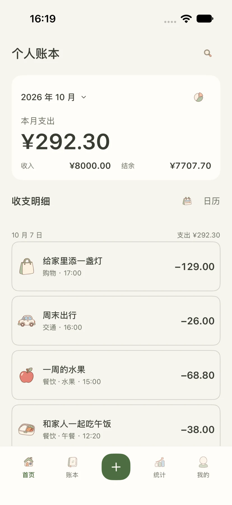
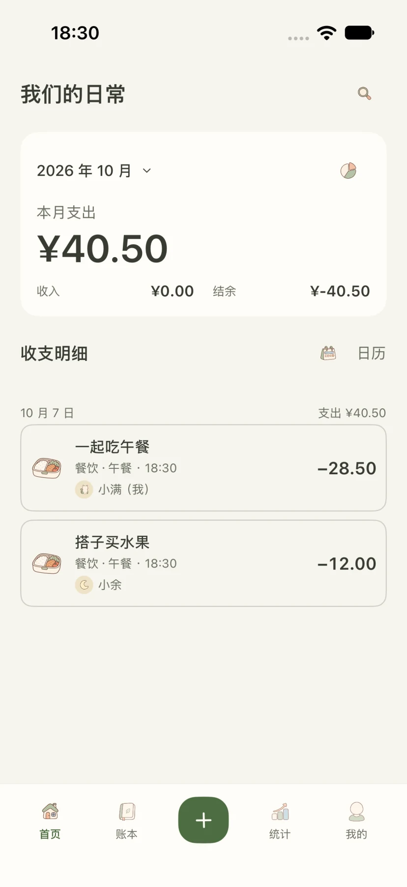
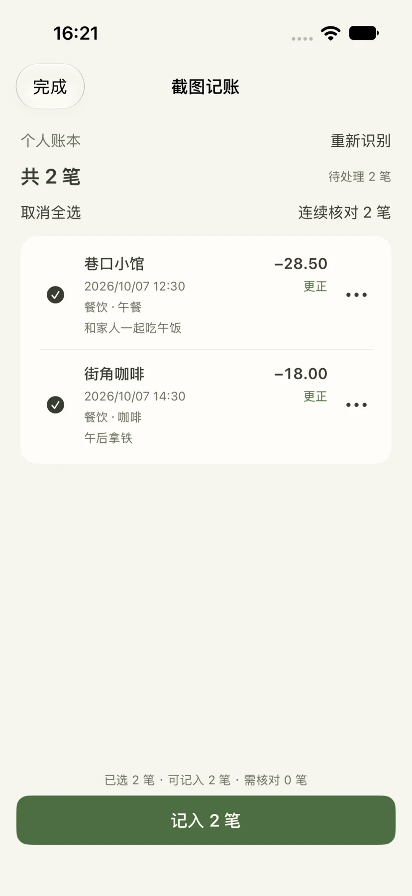

基础版
¥0
日常收支记录、多账本、分类、统计与预算。数据导入与备份恢复永久免费。
SHIYU LEDGER · 原生记账
纯净无广告，离线优先，无需注册登录。
清晰记录每一笔日常开销，支持家庭共享账本与智能识图记账。
专为 iPhone 与 iPad 打造 · 正在准备上架

打开即用，无弹窗与信息流打扰。
无需注册第三方账号，离线也能记。
数据存储于设备本地，按需开启 iCloud 同步。
FEATURES
支持多账本、多级分类、标签与月度预算，收支趋势与明细排行一目了然。

创建家庭账本并邀请家人共同记录，日常买菜、出游与家庭采购开销一目了然。
支持本机 OCR 离线提取截图文字，也可选用豆包 AI 快捷指令进行智能识图，核对无误后再确认入账。

LOCALIZATION
支持简体中文与 English。在应用设置中自由切换；英文模式下金额采用标准千分位分隔（如 ¥1,234,567.89），基础币种保持人民币，已保存的分类与备注不受影响。
PRICING
基础记账永久免费，按需解锁云同步、家庭协同与智能识图能力。
Pro 提供 7 天免费体验，到期不扣费、不自动续订。
日常收支记录、多账本、分类、统计与预算。数据导入与备份恢复永久免费。
个人 iCloud 同步、家庭共享账本、智能识图记账、数据导出与应用锁。按年订阅。
一次购买，终身解锁全部 Pro 功能，无需续费。
以上价格为中国大陆参考价格，实际以 App Store 购买页面为准。7 天免费体验每账号限一次，到期后所有历史数据完整保留。查看详细内购规则 →
FAQ
可以。基础记账完全离线运行，无需注册或登录拾余账号。仅在主动开启个人 iCloud 同步或家庭共享时，需要登录设备的 Apple 账户。
基础记账数据保存在手机本地。开启云端同步后，通过 Apple CloudKit 保存在个人私有 iCloud 中，开发者不自建服务器存储用户账目。详见隐私政策。
不会。7 天免费体验为独立权益，到期自动停止，绝不会自动扣费或转为订阅。仅当主动购买年度订阅后才会按年续订。
如有使用疑问或问题反馈，请发送邮件至 906626481@qq.com。反馈时请附上应用版本、iOS 系统版本及操作说明。